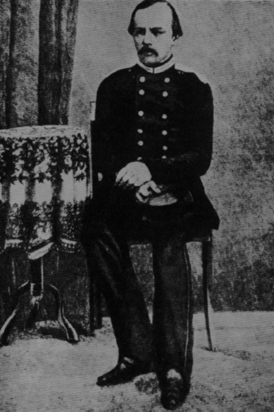
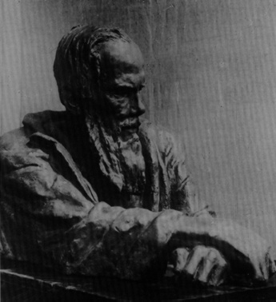

DOSTOYEVSKY'S CRIME AND PUNISHMENT
SUMMARY AND STUDY GUIDE

CAST OF CHARACTERS
Rodion Romanovitch Raskolnikov The main character who is alternately
called Rodya, Rodenka, and Rodka.
Avdotya Romanovna Raskolnikov Rodya's sister, alternately called
Dounia.
Pulcheria Alexandrovna Raskolnikov Rodya's mother.
Semyon Zakharovitch Marmeladov A drunkard who figures prominently
in a bar conversation with Raskolnikov.
Katerina Ivanovna The wife of Marmeladov.
Sofya Semyonovna Marmeladov Marmeladov's daughter and devoted
step-daughter of Katerina Ivanovna, who prostitutes herself and later falls
in love with Raskolnikov. Also called Sonia.
Arkady Ivanovitch Svidrigaïlov Dounia's former employer
who arrives in St. Petersburg.
Marfa Petrovna Svidrigaïlov's wife who dies and leaves
Dounia a bundle of needed money.
Pyotr Petrovich Luzhin A rich man who thinks he can buy happiness
for Dounia, his love. His name, comically, means "puddle."
Dimitri Prokofitch Razhumikin Raskolnikov's best friend and
guardian of Dounia.
Andrei Semyonovitch Lebeziatnikov A tenant in the same building
as the Marmeladovs and a liberal.
Porfiry Petrovich The overseeing police officer on Raskolnikov's
case.
Alyona Ivanovna The moneylender who Raskolnikov murders.
Lizaveta Ivanovna The simple-minded sister of Alyona and a friend
of Sonya.
Praskovya Pavlovna Raskolnikov's complaining landlady who is
owed back-rent.
Nastasya Praskovya's servant and a friend of Raskolnikov.
Amalia Fyodorovna The Marmeladov's landlady who causes a big
scandalous fight at a dinner party.
Kapernaumov Sonia's landlady.
Zossimov A friend of Razhumikin and a doctor who cared for Raskolnikov.
Nikodim Fomitch Chief of the police.
Zametov A clerk in the police station and a fiend of Razhumikin.
Ilya Petrovitch A police official.
Nikolay and Dimitri The painters, one of whom admits to the
crime.

NOVEL SUMMARY
PART ONE
Chapter One:
Oh God, how loathsome it all is! and can I, can I possibly .No, its nonsense, its rubbish! he added resolutely. And how could such an atrocious thing come into my head? What filthy things my heart is capable of. (Raskolnikov)
The reader is introduced to Rodion Romanovitch Raskolnikov, a handsome young student. He is hopelessly in debt to his landlady. He is going to see a pawnbroker and is obsessed with not running into anyone on the way. Raskolnikov is in the process of planning the murder of Alyona Ivanovna, the pawnbroker. The thought of the crime disgusts him, but he continues to plan. After leaving Alyona Ivanovnas, he enters a tavern.
Chapter Two:
He will come in that day and He will ask: Where is the daughter who gave herself for her cross, consumptive step-mother and for the little children of another? Where is the daughter who had pity upon the filthy drunkard, her earthly father, undismayed by his beastliness? And He will say, Come to Me .Thy sins which are many are forgiven thee, for thou has loved much . (Marmeladov)
Raskolnikov meets Semyon Zakharovitch Marmeladov, a drunken clerk, in the tavern. Marmeladov tells Raskolnikov that he had previously lost his position because of his alcoholism before being reinstated. He mentions how his wife was beaten a month earlier by Mr. Lebeziatnikov. Five days earlier, Marmeladov took all of the familys money and left home, squandering it on alcohol. He is afraid to go home and face his wife, Katerina Ivanovna. Their eldest daughter, Sofya Semyonovna (Sonia), has been forced into prostitution to raise money for her destitute family. Marmeladov is convinced that God will forgive Sonia. Raskolnikov leads Marmeladov home and sees the horrible condition of his family. Although he is in desperate need of money himself, Raskolnikov silently leaves some money on the windowsill. He immediately wishes he hadnt given the money away, but does not take it back.
Chapter Three:
Almost from the first, while he read the letter, Raskolnikovs face was wet with tears; but when he finished it, his face was pale and distorted and a bitter, wrathful and malignant smile was on his lips.
The reader is introduced to Raskolnikovs cramped quarters. His living conditions disgust him but they keep him isolated, which he desires. Raskolnikov, a former student, used to support himself by teaching children. His maid, Nastasya, tells him that his landlady, Praskovya Pavlovna, is going to file a complaint with the police because he has not paid his back rent. He receives a letter from his mother, Pulcheria Alexandrovna, about his sister, Avdotya Romanovna (Dounia). Dounia worked as a tutor for the Svidrigaïlovs. Arkady Ivanovitch Svidrigaïlov tried to seduce Dounia, who rejected him. However, Svdrigailovs wife, Marfa Petrovna, overheard their conversations and spread disgraceful rumors about Dounia throughout town. Once she realized her error, she went door-to-door to explain the situation and restore Dounias reputation. She introduces Dounia to Pyotr Petrovich Luzhin, who wants an honorable wife without a dowry so that she will feel indebted to him. Pulcheria Alexandrovna writes that the marriage will take place in St. Petersburg, and she and Dounia will be arriving in town soon. She wants Raskolnikov to become Luzhins law associate or partner. She writes that she hopes Raskolnikov is still saying his prayers. Raskolnikov is angered by the news, adding to his anxiety.
Chapter Four:
Do you understand, sir, do you understand what it means when you have absolutely nowhere to turn? (Marmeladov, remembered by Raskolnikov)
Raskolnikov decides that he must break off Dounias wedding. He is angry that his mother is pinning all of her hopes on Luzhin, and Raskolnikov thinks Dounia only agreed to the marriage to save him and their mother. He thinks Dounias sacrifice is on the same level as Sonias. While walking down the street he sees a drunk, fifteen-year old girl being followed by a base-looking man. Raskolnikov enlists a policeman to help him protect the girl, and then offers the last of his money to call a cab for her. He suddenly has a change of heart, however, and tells the policeman to leave them alone. Raskolnikov has very few friends from the university, since most people thought he looked down upon them, but he is still on good terms with Razhumikin, who is also currently out of school but is saving money to go back. Raskolnikov decides to visit Razhumikin.
Chapter Five:
But the poor boy, beside himself, made his way, screaming, through the crowd to the sorrel nag, put his arms round her bleeding head and kissed it, kissed the eyes and kissed the lips .
Raskolnikov decides to delay his visit to Razhumikin until after his finishes the murder. He has a dream about his childhood. In the dream, he is seven years old and is going with his father to visit his mothers grave. They encounter a mob of drunken peasants surrounding a wagon filled with people. The old horse hitched in front of the wagon is unable to pull it and is being beaten by its owner. The man whips the horse in the eyes and bludgeons it with a crowbar, killing it. Raskolnikov thinks this is a sign about his plan to murder Alyona Ivanovna. He prays for the dream to be renounced and feels free from it. He continues to plan the murder, finding out when Lizaveta Ivanovna, Alyona Ivanovnas sister, will be out of the apartment, leaving the pawnbroker alone.
Chapter Six:
When reason fails, the devil helps! [Raskolnikov] thought with a strange grin.
Raskolnikov remembers a conversation where students discuss killing Alyona Ivanovna and using her money to help people, figuring that thousands of good deeds outweigh one crime and that she has done nothing but bad deeds for society. Raskolnikov makes his final preparations for the murder. He feels that criminals get caught because of a disease of will that causes them to lose their reason, and is confident that he will not be so afflicted. He has also convinced himself that this is not a crime. He does not arrive at Alyona Ivanovnas apartment until seven-thirty, one half-hour after he had planned. Despite his conviction, he is in a frenzy when he reaches the apartment.
Chapter Seven:
He longed to run away from the place as fast as possible. And if at that moment he had been capable of seeing and reasoning more correctly, if he had been able to realize all the difficulties of his position, the hopelessness, the hideousness and the absurdity of it, if he could have understood how many obstacles, and, perhaps, crimes he had still to overcome or to commit, to get out of that place and to make his way home, it is very possible that he would have flung up everything, and would have gone to give himself up, and not from fear, but from simple horror and loathing of what he had done.
Raskolnikov commits the murder. He strikes Alyona Ivanovna twice in the head with the blunt side of an ax, killing her. He stands still trembling after the murder before finally searching for her keys and trying to find the money. Lizaveta returns, and in his panic Raskolnikov splits her skull with one blow from the sharp side of the ax. After this, he is unconscious in his delirium. He deliberately attempts to clean the ax and his clothing. As he is ready to leave, two visitors ring the doorbell. Realizing that the door is locked from the inside, they leave to get help, allowing Raskolnikov to escape. He falls asleep almost immediately after returning home.
PART TWO
Chapter One:
A strange idea suddenly occurred to [Raskolnikov], to get up at once, to go to Nikodim Fomitch, and tell him everything that had happened yesterday, and then go with him to his lodgings to show him the things in the hole in the corner. The impulse was so strong that he got up from his seat to carry it out.
Raskolnikov is furious with himself for not locking his door and hiding the few things he stole, thinking that he will be discovered. Nastasya comes into his room with a police officer, giving him a summons to appear at the police station. Raskolnikov thinks the summons is a trick to get him to confess, and he wonders if he should or not. He feels unencumbered because of his crime and mocks the assistant superintendent at the station. Raskolnikov signs an IOU for the 115 roubles he owes his landlady. As he leaves he overhears a conversation about the murders and passes out. After awakening, he is terrified that the police will suspect him of being the murderer.
Chapter Two:
No one has been here. Thats the blood crying in your ears. When theres no outlet for it and it gets clotted, you begin fancying things . (Nastasya)
Raskolnikov decides to hide the stolen loot under a large rock. His delirium is clearly affecting his actions, and he feels an almost unbearable joy after successfully hiding the goods. Raskolnikov goes to visit Razhumikin and almost immediately regrets it. Razhumikin offers Raskolnikov a translating job, but he refuses it. Raskolnikov is almost run over by a coach on his way home and is given money by an old woman who believes hes a beggar. Raskolnikov throws the money away. When he returns home he believes he hears Ilya Petrovich, a police officer, beating his landlady. Nastasya tells him that it never happened and realizes that he is sick. He soon collapses into unconsciousness.
Chapter Three:
Raskolnikov looked at all this with profound astonishment and a dull, unreasoning terror. He made up his mind to keep quiet and see what would happen. I believe I am not wandering, I believe its reality, he thought.
Raskolnikov is suffering from a fever and had forgotten about the murder. A man comes to see Raskolnikov with 35 roubles from his mother. He initially refuses it, but Razhumikin, who has been taking care of him, convinces him to accept it. Raskolnikov is not sure that hes fully conscious and decides to play possum until he knows the full situation. He is afraid that Razhumikin and the others know he is guilty, and considers escaping to America. Razhumikin shows him that he has recovered the IOU and tears it up, then leaves to buy Raskolnikov some new clothes.
Chapter Four:
- Too clever! No, my boy, youre too clever. That beats everything!
- But, why, why?
- Why, because everything fits too well
its too melodramatic. (Zossimov
rejecting
Razhumikins
theory of the execution of the escape)
The doctor, Zossimov, and the investigator, Porfiry Petrovich, come to see Raskolnikov. Zossimov and Razhumikin discuss the murder, and Raskolnikov learns that the painters at the building have been accused. Razhumikin has most of the truth sorted out, except for the fact that Raskolnikov is the murderer. Zossimov rejects his story as melodramatic. Raskolnikov is excited by the conversation. Zossimov recognizes this, but misinterprets is as a sign of recovery from his illness.
Chapter Five:
[Is] it true that you told your fiancée within an hour of her acceptance, that what pleased you most was that she was a beggar because it was better to raise a wife from poverty, so that you may have complete control over her, and reproach her with your being her benefactor? (Raskolnikov to Luzhin)
Luzhin comes to see Raskolnikov. Raskolnikov openly dislikes him, but Luzhin tries rather unsuccessfully to ignore it. Luzhin is staying with Lebeziatnikov and has made poor living arrangements for Dounia and Pulcheria Alexandrovna. The conversation turns to the murders and Raskolnikov learns that all people who had left pledges with the pawnbroker will be examined. Razhumikin comments that the murderer must have been a novice who escaped by luck. Raskolnikov accuses Luzhin of only wanting Dounia to feel indebted to him, causing Luzhin to accuse Pulcheria Alexandrovna of misrepresenting him. Raskolnikov threatens Luzhin with violence if he ever mentions his mother again. Luzhin declares that he has been irrevocably offended. Razhumikin and Zossimov notice that Raskolnikov seems to care only about the murders.
Chapter Six:
I dare say when it came to deeds youd make a slip. I believe that even a practiced desperate man cannot always reckon on himself, much less you and I. (Zametov to Raskolnikov)
Raskolnikov leaves his apartment despite his illness. He decides that life, no matter how poor, is better than death, ending for the time his thoughts of suicide. He goes to a restaurant, the Palais de Cristal, and asks for the newspapers from the past five days. While reading the newspapers he meets Zametov, a police officer and friend of Razhumikin. Raskolnikov taunts Zametov by saying he only came to read about the murders. Zametov insinuates that an amateur must have committed the murders, angering Raskolnikov. Raskolnikov then lays out his plan for the perfect execution of the murder and theft, the way he actually did it. He asks Zametov what he would think if Raskolnikov had been the murderer. Zametov is momentarily frightened but decides it couldnt be true. After leaving the restaurant Raskolnikov meets Razhumikin and tells him to leave him alone. He goes to a bridge and sees a woman attempt to drown herself. He realizes that he was about to attempt the same thing and decides that it is not a good enough death for him. He returns to the site of the murders and asks questions of the workmen repairing it. He is obviously still somewhat delirious. Raskolnikov then resolves to confess to the police and starts to go to the police station.
Chapter Seven:
Polenka, my name is Rodion. Pray sometimes for me, too. And Thy servant Rodion, nothing more. (Raskolnikov)
Raskolnikov comes across Marmeladov while on his way to the police station. Marmeladov has been run over by a carriage, having drunkenly stumbled in front of it. Raskolnikov brings him back to his apartment and calls for a doctor. Sonia comes in dressed as a prostitute, and Marmeladov, after trying to make apologies to his family, dies in her arms. Raskolnikov gives Katerina Ivanovna twenty roubles and asks Polenka, the younger daughter, to pray for him. Raskolnikov is in high spirits, convinced that he still has life in him. Zossimov believes that Raskolnikov may be insane. Raskolnikov returns home to find his mother and sister waiting for him.
PART THREE
Chapter One:
I like them to talk nonsense. Thats mans one privlege over all creation. Through error you come to the truth. I am a man because I err! You never reach any truth without making fourteen mistakes and very likely a hundred and fourteen. (Razhumikin)
Raskolnikov declares that he will not allow Dounia and Luzhins wedding to take place. Zossimov tells Pulcheria Alexandrovna that Raskolnikov will be fine but that fresh shocks must be avoided. Dounia and Pulcheria Alexandrovna are thankful to Razhumikin for his help taking care of Raskolnikov. Both Razhumikin and Zossimov are attracted to Dounia.
Chapter Two:
I never could depend on what he would do when he was only fifteen. And I am sure that he might do something now that nobody else would think of doing . (Pulcheria Alexandrovna about Raskolnikov)
Razhumikin is upset with himself for playing to Dounias emotions. Zossimov says that Raskolnikov is a monomaniac, not insane, and that he is satisfied with Raskolnikovs progress. Razhumikin goes to visit Dounia and Pulcheria Alexandrovna and is surprised that Dounia is not angry with him. He tells them about Raskolnikovs life for the past two years. They show him a letter from Luzhin requesting that Raskolnikov not be present at their first meeting.
Chapter Three:
It is me or Luzhin. If I am a scoundrel, you must not be. One is enough. If you marry Luzhin, I cease at once to look on you as a sister. (Raskolnikov to Dounia)
Dounia and Pulcheria Alexandrovna go to visit Raskolnikov. He feigns sentimentality, but Dounia sees through it. Pulcheria Alexandrovna is strangely afraid of her son. Raskolnikov realizes that his mother is becoming timid. Raskolnikov is in a state of despair because he realizes he can never speak freely again without revealing his crime. Raskolnikov believes Dounia is selling herself for money and lays down an ultimatum: its either him or Luzhin. Raskolnikov and Razhumikin will be present at the meeting with Luzhin.
Chapter Four:
Do you know, Dounia, I was looking at you two. You are the very portrait of [Raskolnikov], and not so much in face as in soul. You are both melancholy, both morose and hot-tempered, both haughty and both generous . (Pulcheria Alexandrovna)
Sonia comes to Raskolnikovs apartment to ask him to come to her fathers funeral. She becomes embarrassed because she realizes Raskolnikov must have given them all of his money. Pulcheria Alexandrovna says that Dounia and Raskolnikov are much alike. Dounia shows her anger towards Luzhins attack on her mother, referring to him as a contemptible slanderer. Raskolnikov tells Razhumikin that he wants to get his pawned goods back. Dounia and Pulcheria Alexandrovna leave. Raskolnikov tells Razhumikin that he wants to speak with Porfiry. Sonia leaves and a man follows her back to her place. Raskolnikov goes with Razhumikin to see Porfiry and mocks him for blushing in front of Dounia.
Chapter Five:
I dont contend that extraordinary people are always bound to commit breaches of morals, as you call it .I simply hinted that an extraordinary man has the right that is not an official right, but an inner right to decide in his own conscience to overstep certain obstacles, and only in case it is essential for the practical fulfillment of his idea . (Raskolnikov)
Porfiry tells Raskolnikov that he is the only pledger who has yet to come forward. Porfiry subtly lets Raskolnikov know that he knows the details of his life over the previous few days. He asks Raskolnikov about an article he wrote about crime. In this article, Raskolnikov wrote that crime is accompanied by illness. He believes there is a distinction between ordinary and extraordinary men; ordinary men must obey the law, but extraordinary men can find sanction to break it under certain circumstances. There are very few such men. In the article, Raskolnikov sanctions bloodshed by conscience. Porfiry thinks Raskolnikov might believe himself to be an extraordinary man. Raskolnikov says that he does believe in God and in Lazarus resurrection. Porfiry tries to trick Raskolnikov by asking him if he saw painters when he went to see the pawnbroker. Raskolnikov says he says people moving out and that the painters were there the day of the murder. Raskolnikov says he had not been at the apartment since a few days prior to the murder.
Chapter Six:
Because only peasants, or the most inexperienced novices deny everything flatly at examinations. If a man is ever so little developed and experienced, he will certainly try to admit all the external facts that cant be avoided, but will seek other explanations of them, will introduce some special, unexpected turn, that will give them another significance and put them in another light. (Raskolnikov)
Raskolnikov and Razhumikin discuss Raskolnikovs discussion with Porfiry. Raskolnikov returns to his apartment to make sure he didnt leave any evidence behind. As he leaves, a stranger approaches him in the street and tells him that he knows Raskolnikov is the murderer. Raskolnikov reassures himself by claiming he killed a principle, not a person. He returns to his room and falls asleep. He has a dream in which he repeatedly strikes the pawnbroker with his ax but she only laughs at him and does not die. When he awakens, Svidrigaïlov is standing in the doorway.
PART FOUR
Chapter One:
Well, wasnt I right when I said we were kindred spirits? (Svidrigaïlov)
In this chapter, readers are introduced to Svidrigaïlov, the most literary character in the novel. Svidrigaïlov is that extraordinary man that Raskolnikov wanted to become. He appears as the person who is capable of killing without moral pangs. A sadist, a murderer, an abuser from one side, he, later in the novel, demonstrates some random acts of kindness, like saving Marmeladovs children. In the Raskolnikov-Svidrigaïlov conversation, both men show great similarities in their thinking. Svidrigaïlov came to St. Petersburg because of Dounia. He offers to pay her 10000 rubles so that she wouldnt marry Luzhin. He also claims that this is the act of kindness and does not carry any motif. After all, he is planning to get married very soon.
Chapter Two:
-Avdotya Romanovna, if I go out of that door now, with such a farewell,
depend upon it I shall never return. Think well! I mean what I say!
-What insolence! cried Dounia, springing up from her place, I do
not wish you to return! (Luzhin and Dounia)
In this chapter, the setting takes place in the rooms of Raskolnikovs mother and sister. During the night the confrontation between Dounia and Luzhin occurs. Luzhin shows himself in the different light; and Dounia, realizing the mistake she made in her judgment of this individual, asks her fiancée to leave forever. Here, the readers are also shown the noble character of Razhumikin and his desire to defend Dounia at all costs. His fascination with her continues to be seen in the novel.
Chapter Three:
Leave me, but dont leave them. Do you understand? (Raskolnikov)
In this chapter, Raskolnikovs inner struggle continues. He leaves his family to Razhumikin, giving him full responsibility for their care. Razhumikin dreams to start a publishing business with Dounia and her brother. He is determined to be close and loyal to them. Raskolnikov knows that he has found the right man to pass his family to.
Chapter Four:
so we must go together, by the same path! Let us go! (Raskolnikov)
Raskolnikov leaves his family and goes immediately to Sonya's house. His mean-spirited taunting of Sonia in this part reminds the reader of an earlier work by Dostoevsky, The Underground Man. This is the religious part of the novel, where Sonia's faith is emphasized. He has her read the raising of Lazarus from the New Testament in a Bible that Lizaveta gave her. Then they agree to go together and take suffering on themselves. Raskolnikov tells her that he knows who committed the murder. Svidrigaïlov is listening through the door of a neighboring flat.
Chapter Five or Double Edged Psychology:
There is one thing, however, to be said all these psychological means of defense, these excuses and evasions, are very insubstantial, and they cut both ways. (Porfiry)
In this chapter the second duel of minds occurs between Raskolnikov and Porfiry. The detective meets his man with warm welcome calling him batiushka (dear little father). He stretches his hands to Raskolnikov but does not shake them. Then, the long conversation occurs where Porfiry using all his talent of psychologist and wit tries to provoke Raskolnikov to confess his crime. The detective does not have any substantial evidence but only the feeling that he found his murderer. He almost succeeds in his task, but is interrupted by the unexpected denouncement.
Chapter Six:
-Why, my dear, you did not expect it either. Look how your hands shake!
-You are trembling yourself Porfiry Petrovich
-So, I am, sir. I did not expect this
(Porfiry and Raskolnikov)
In the middle of the above conversation, Nikolay, a house painter at Lizavetas and Alyona Ivanovnas house, suddenly appears at the door and confesses of the murder. Both Raskolnikov and Porfiry are in shock. None of them expected such a turn of events. Raskolnikov is saved for some time. In this chapter, Raskolnikov also discovers that the witness Porfiry had was the man he met on the street that accused him of spilling blood. Raskolnikov realizes that detective does not have anything on him and was bluffing all the way. He decides to continue the fight.
PART FIVE
Chapter One:
I heard everything and I saw everything. This was noble, I mean humane. (Lebeziatnikov)
In this chapter, readers are more closely introduced to Lebeziatnikov, a funny intellectual who parrots the socialist ideas but betrays them himself in his life. Also here, the meeting between Luzhin and Sonia occurs where Luzhin gives 10 rubles to Marmeladovs family. Lebeziatnikov witnesses the scene and compliments Luzhin on his act of kindness. He saw that Luzhin put something additional in Sonias pocket and amazed at his generosity. Lebeziatnikov is not aware of Luzhins plan to humiliate Sonia and provoke a scandal that will occur in the later chapter.
Chapter Two:
Perhaps the most potent influence on her was that special pride of the poor, which makes many poor people exert their utmost efforts and spend the last penny of their savings, simply in order to make as good a showing as their neighbors and not be criticized by them.
The chapter provides outrageous comic relief. Katerina Ivanovna has a funeral banquet to honor her dead husband. She makes the mistake of inviting everybody to the dinner, but not being happy with the guests that showed up. She feels insulted by the banquet and demands appreciation to her good heritage from everybody. In the end she gets into a horrible fight with her landlady.
Chapter Three:
Sofia Ivanovna, immediately after your visit, a banknote of one hundred rubles disappeared from my table in my friend Andrei Semyonovitch Lebeziatnikovs room. If, in any way whatever, you know where it is now, and will tell us, than I assure you that shall be the end of the matter. In the contrary event, I shall be obliged to have recourse to more serious measures, and then on your own head be it! (Luzhin)
There is the scandal scene in which Luzhin accuses Sonia of stealing his 100 rubles. He gets caught in the act by Lebeziatnikov who refuses to testify on his behalf and proves Sonias innocence. Luzhin leaves in disgrace. On his way out the door, a goblet narrowly misses his head and hits the landlady. Her response is to evict Katerina from the building.
Chapter Four:
Go at once, this instant, stand at the cross roads, first bow down and kiss the earth you have desecrated, then bow to the whole world, to the four corners of the earth and say aloud to all the world: I have done murder. Then God will send you life again. (Sonia)
Raskolnikov confesses about his crime to Sonia. She is shocked but promises to follow him to Siberia. Sonya asks him to ask for forgiveness of his sins, but he refuses to do so, as he refuses to accept her cypress cross. However, Sonia leaves her door open for him to come back and except his life of suffering. The conversation is overheard by Svidrigaïlov.
Chapter Five:
Let them see well-born children, whose father was a civil servant, going about he streets as beggars." (Katerina Ivanovna)
In this chapter, Lebeziatnikov tells Sonya what she already knew from
Raskolnikov, that Katerina Ivanovna and her children are on the streets.
Sonia rushes to her family and finds her mother and siblings singing, dancing
for the crowd and begging for money. Katerina Ivanovna loses her mind and
collapses. When taken to Sonias apartment she says her last words and
dies. Svidrigaïlov offers to help with the funeral and the future
of Marmeladovs children. He decides to pay for their care in the orphanage
house.
Also here, Raskolnikovs inner struggle continues. He meets with Dounia
and encourages her to stay with Razhumikin, while saying good bye to
her himself. At the end of the chapter, Raskolnikov is also witnessing
Katerinas death. At the scene he learns that Svidrigaïlov knows his
little secret.
PART SIX
Chapter One:
Whatever happens to me, wherever I go, you will stay and look after them. I entrust them to you, so to speak, Razhumikin. (Raskolnikov)
In this chapter, Raskolnikov again asks his friend, Razhumikin, to look after Dounia and his mother. From Razhumikin, the readers also learn that Dounia received a letter from Svidrigaïlov and soon left the house. Upon Razhumikins leaving, Raskolnikov gets another visitor, Porfiry. Significantly, Raskolnikov no longer feels nervous around him.
Chapter Two:
Who was the murderer? But it was you, Rodion Romanovich! You murdered them! (Porfiry)
In this chapter, Porfiry opens up all of his cards. Again using the methods of his psychology, the smart detective explains to Raskolnikov why the two painters, Nikolay and Dimitri, could not have committed the crime and why it was only he, Raskolnikov, who could. Porfiry offers him to confess the murder on his own will and tells him that he is not afraid of Raskolnikov trying to escape.
Chapter Three:
It was a rather strange face, almost like a mask: red and white, with a very light colored beard and still quiet abundant fair hair. The eyes seemed somehow too blue, and their gaze too massive and unmoving. There was something terribly unpleasant in the handsome face, so extraordinarily young for its years.
After the talk with the detective, Raskolnikov runs to see Svidrigaïlov, to hear something new from him. He finds his man in the tavern, drinking and partying with the prostitute. Raskolnikov threatens Svidrigaïlov not to see his sister, but the man seemed not to take his words into consideration. Here, readers gain a deeper insight in Svidrigaïlovs character and get the first foreshadowing on his suicide.
Chapter Four:
I like all children. I like them very much, laughed Svidrigaïlov.
The conversation between Raskolnikov and Svidrigaïlov continues. Here, the reader sees the whole nasty and horrible nature of the man with all his sexual appetites. Svidrigaïlov tells Raskolnikov about his life, his marriage to Marfa Petrovna and their agreement, about Dounias appearance in his house and his fascination with her. Svidrigaïlov describes the whole scandal related to Dounia and its happy ending for Raskolnikovs sister. Then he talks about his soon marriage to a sixteen year old and his fascination with children. This narrative clearly shows the perverted side to Svidrigaïlovs character and the danger he presents for women and children. It also becomes obvious that he is still obsessed with Dounia and not about to give up on her.
Chapter Five:
There was a strange smile on his face, the weak, pitiful, mournful
smile of despair
In this chapter, the most evil, scandalous scene occurs between Dounia and Svidrigaïlov. They meet on the street, and Svidrigaïlov tricks Dounia into coming to his apartment. There he tells her that he knows that her brother has committed all those murders and tries to black mail her with this information. Svidrigaïlov asks Dounia to be his and in return he would protect her brother and her mother from unnecessary problems. Insulted by the whole situation Dounia tries to leave and discovers that Svidrigaïlov has locked the door and that there is no one in the house except the two of them. Seeing that the man is very serious about his intentions, Dounia grabs Svidrigaïlovs gun and shoots him twice, but misses. The third time, she is at the very close range, however feels that she has no strength to kill a person. Svidrigaïlov embraces her and realizing that there is no hope that this woman would even care for him a little bit, he gives her the key and lets her go. At the end it becomes clear that he truly loves Dounia and that this love will be his executioner.
Chapter Six:
This what is this? But now she turned to him, all her little face glowing, and stretched out her arms Accursed creature! cried Svidrigaïlov in horror, raising his arm to strike her
In this chapter, Svidrigaïlov gives money to Sonia for her trip to Siberia with Raskolnikov. Then, Svidrigaïlov dreams a perverse sexual dream with the five-year-old girl. After, he makes his decision to shoot himself and shortly acts on it.
Chapter Seven:
Crime? What crime? Killing a foul, noxious louse, that old moneylender, no good to anybody, who sucked the life-blood of the poor, so vile that killing her ought to bring absolution for forty sins was that a crime?" (Raskolnikov)
Here, Raskolnikov visits his mother asking her to pray for him and warning her about his soon departure. Then he talks to his sister about suffering and confessing the crime. He wishes her good bye and leaves to Sonias. It is obvious that Raskolnikov, deep down his soul, decided to confess his crime.
Chapter Eight:
It was I who killed the old woman and her sister, Lizaveta, with an axe, and robbed them (Raskolnikov)
In this chapter, Raskolnikov accepts Sonias cross. Both of them begin their way of suffering and obedience. He goes and asks forgiveness from God and people at the crossroads, and then enters the police station to confess his crime. Sonia follows him all the way.
EPILOGUES
But that is the beginning of the new story, the story of the gradual renewal of a man, of his gradual regeneration, of his slow progress from one world to another, of how he learned to know a hitherto undreamed of reality.
Raskolnikov is sentenced to eight years in Siberia and Sonia goes with him. Two months after Raskolnikov's trial, Razhumikin marries Dounia. The mother dies. Raskolnikov is, at first, an aloof prisoner, but then after Sonias illness he realizes his love for her. Thus the book ends.
STUDY TOPICS
Trace the psychological progress of Raskolnikov's mind from the planning stages of the murder through the final realization of love.
Delineate the superior man argument and evaluate Raskolnikov by the theory.
Consider the different dreams throughout the novel and decide what functional role they fulfill.
Explore the religious and biblical themes in the novel, especially the story of Lazarus that Sonia reads to Raskolnikov.
Compare and contrast Svidrigailov with Raskolnikov-- How are they paralleled and opposed? How does Svidrigailov fit into the extraordinary man theory? Why does Svidrigailov commit suicide? Decide how you feel about his character.
What role does suffering have in the characters and in the novel? How does each character suffer and feel about suffering? Who suffers the greatest in Crime and Punishment?
The crime in Crime and Punishment occurs very early in the novel leaving
the rest of the novel to entertain theories of punishment. Discuss the
different forms of punishment and the concepts of law present in the novel.
Some facts that the English reader should know:
1) Raskolnikov, Luzhin, Svidrigaïlov, Zametov, Marmeladov and Razhumikin
have some symbolic meanings in their last names. For every Russian reader
it is the obvious fact; however, in translation the meaning of names becomes
lost.
Raskolnik schismatic
Luzha puddle
Razum reason, intelligence
Zametit to notice
Marmelad sort of sweet candy
Svidrigaïlov name from the medieval Russian history, Lithuanian
prince
2) The story of Marmeladovs family came from the other Dostoevskys novel The Drunkards, which the writer had never finished. Instead of turning the story into the complete literary work, Dostoevsky put it in the plot of Crime and Punishment.
3) The character of Raskolnikov could be compared to other characters in Russian literature of that time. These heroes of Romantic era often possessed the qualities of revolt, cynicism and moral flaw in intelligent and attractive light. The critics created a name for such type of literary character, superfluous person. The examples of these heroes are Pushkins Yevgeniy Onegin and Lermontovs Pechorin (Hero of Our Time).
4) Russian word for crime is prestuplenie which in direct translation means stepping over. Stepping over the line is also one of the phrases used by Raskolnikov in his Louse or Napoleon theory.
5) The murder weapon in the novel is an axe, a tool so often associated with Russian peasantry. It also carries the connotations of peasant unrest. However, Porfiry, is not deluded by the traditional weapon of a peasant and dismisses two painters from the list of suspects. Instead the axe is used in his conversation with Raskolnikov as a double edged metaphor.
